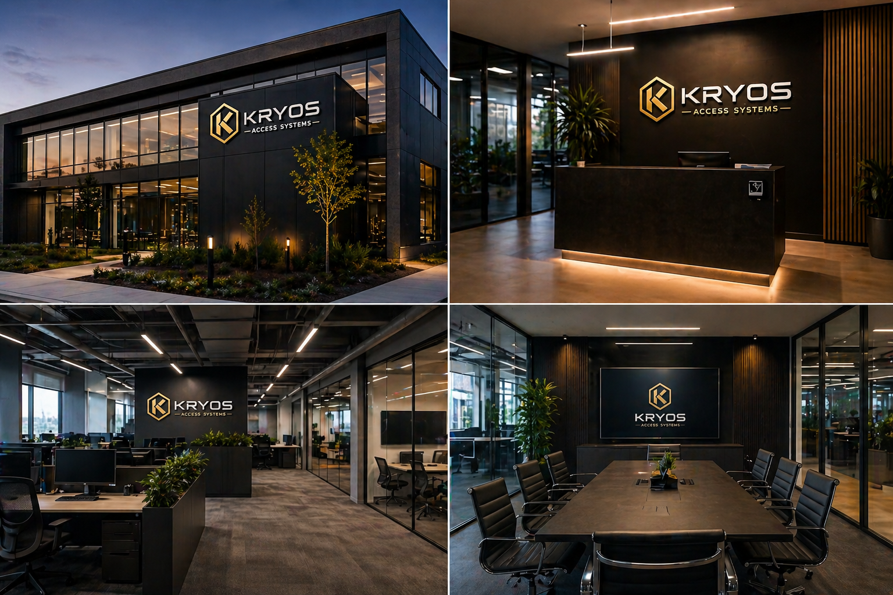
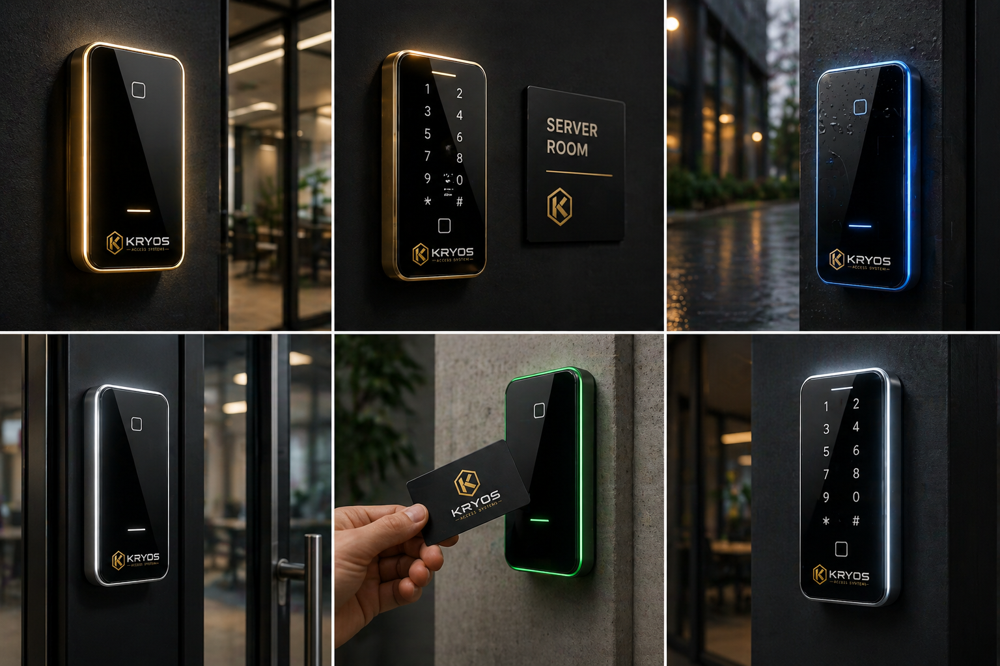

Access Control Systems
Door controllers, readers, smart credentials, schedules, permissions, and reporting configured for real-world operations.
Kryos Access Systems delivers enterprise-grade access control alongside practical IT services including networking, infrastructure support, cloud-connected systems, biometric facial recognition readers, visitor control, and real-time monitoring for modern facilities.
Kryos supports both the physical layer and the technical layer, giving teams a cleaner way to manage access, infrastructure, connectivity, and day-to-day reliability.
Door controllers, readers, smart credentials, schedules, permissions, and reporting configured for real-world operations.
Touchless biometric entry designed for frictionless throughput, enhanced security, and modern tenant or employee experiences.
Manage permissions, live events, system health, and emergency actions securely from anywhere.
Structured networking, cloud-connected systems, device rollouts, and infrastructure support that keep critical environments online.
Flexible identity layers combining cards, PINs, biometrics, and mobile credentials for the right level of assurance.
Video intercom, visitor routing, and entry workflows that create a cleaner experience without sacrificing control.
One coordinated approach can support the full flow of entry, identity, infrastructure, connectivity, and oversight across your property.
From the building exterior to the front desk and shared workspaces, Kryos is positioned as a premium security and IT partner for environments that need dependable performance without visual compromise.

Premium entry hardware that fits the visual standard of the building facade.
Credential readers and intercom hardware that complement reception environments.
Access zones that support flexible floor plans without sacrificing control.
Restricted-access conference and executive suites with frictionless approved entry.

Live event feeds, permission controls, and system health from anywhere.
Expert configuration and integration support from deployment through steady-state.
Structured cabling, switching, and connectivity that keeps access systems reliable.
Physical server environments and infrastructure managed to enterprise uptime standards.
Deploy touchless biometric readers where fast identity verification and stronger assurance matter most.

Facial recognition supports faster throughput and stronger identity assurance at front doors, private suites, and restricted zones.

Credential readers, keypad combinations, and elegant wall hardware give teams the right balance of convenience and control.
Kryos is positioned for commercial and institutional sites that need dependable control, visibility, infrastructure support, and manageable day-to-day operation.
Kryos includes a focused set of connected apps for access control logic, secure identity workflows, field operations, and live customer assistance through Iron Vault.

Access control logic, credential workflows, and operational visibility for teams managing modern entry systems.
Open app →
Secure identity workflows and protected operational access for higher-assurance environments and sensitive actions.
Open app →
Field coordination, technician workflows, and operational updates for teams supporting live deployments and service calls.
Open app →
Kryos chatbot assistance for customer questions, guidance, and fast help across the access and security experience.
Open chatbot →Projects move better when the path is clear. Kryos keeps the rollout simple from assessment through long-term support.
Review site needs, entry points, existing infrastructure, and operational requirements.
Map the right system architecture, hardware approach, and user workflow for the environment.
Install and configure with attention to finish quality, consistency, and practical usability.
Deliver documentation, training, and continuity so the system works long after go-live.
Teams usually want to understand rollout fit, remote management, and how Kryos blends security with infrastructure support before booking a demo.
Kryos supports commercial offices, multifamily properties, retail sites, industrial environments, education campuses, and administrative healthcare spaces that need stronger control over entry, identity, and infrastructure reliability.
Yes. Kryos combines access control, facial recognition, visitor workflows, cloud management, networking, and infrastructure support so teams can manage physical security and technical operations together.
Kryos deployments are built around cloud-connected management, which allows remote permissions, event visibility, lockdown controls, and ongoing support without requiring staff to be on site for every change.
Book a walkthrough of access control, facial recognition readers, cloud management, IT infrastructure support, and the right rollout strategy for your facility.